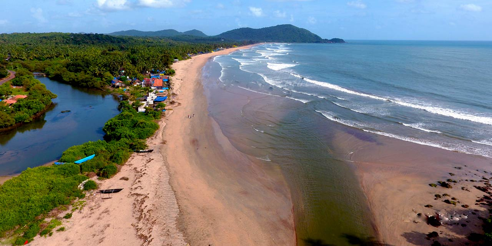
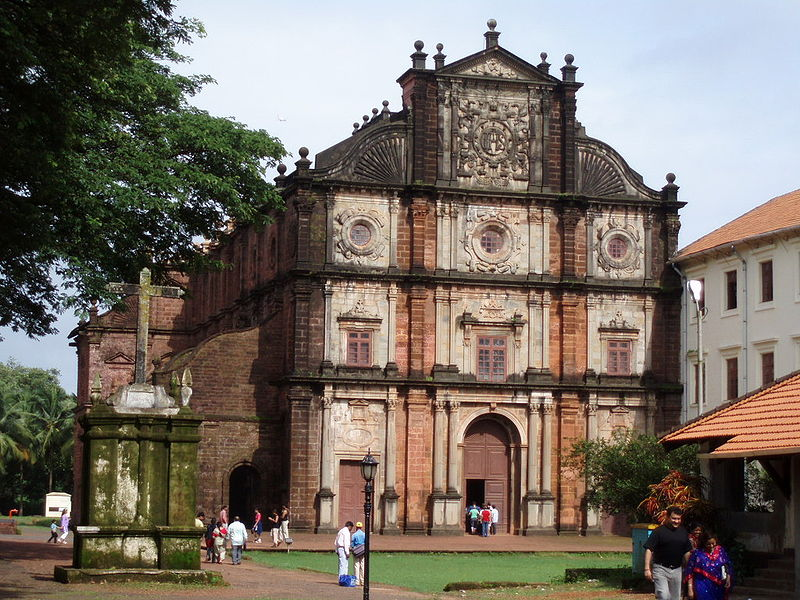
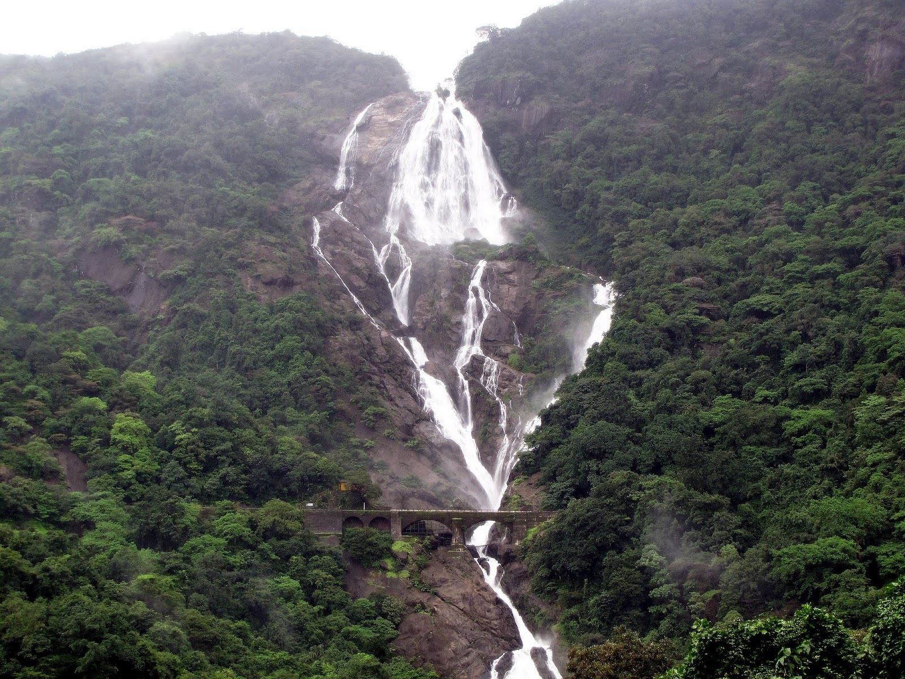

GOA
Goa is a state in western India with coastlines stretching along the Arabian Sea.
Its long history as a Portuguese colony prior to 1961 is evident in its preserved 17th-century churches and the area’s tropical spice plantations.
Goa is also known for its beaches and its night life
Best Places to visit:-
1. Agonda Beach:-

Agonda is a large village located in Canacona in South Goa district, India.
Agonda is famous for its beach and It is one of the only four beaches designated as turtle nesting sites under the Coastal Regulation Zone 2011.
2. Basilica of Bom Jesus:-
The Basilica of Bom Jesus constructed in 1594, is a Roman Catholic basilica located in the Goa state,
situated in the Konkan region of India. It is both a pilgrimage centre and also the most iconic monument of all the churches and convents
of Goa, recognised by UNESCO as a World Heritage Site.
3. Palolem Beach:-

Palolem Beach is a stretch of white sand on a bay in South Goa, India. It's known for its calm waters and for its nightlife,
including "silent discos" where partygoers wear headphones and enjoy. Lined with palm trees and colorful wooden shacks,
the beach faces Canacona Island, known for its resident monkeys.
4. Aguada Fort:-
Fort Aguada is a well-preserved seventeenth-century Portuguese fort, along with a lighthouse, standing in Goa,
India, on Sinquerim Beach, overlooking the Arabian Sea. It is an ASI protected Monument of National Importance in Goa.

5. Dudhsagar Falls:-

Dudhsagar Falls is a four-tiered waterfall located on the Mandovi River in the Indian state of Goa. Its total heght is 1017 feet. It is 60 km
from Panaji by road and is located on the Belgavi–Vasco Da Gama rail route about 46 km east of Madgaon and 80 km south of Belgavi.
Must try Dishes:-
1. Crab Xec-Xec:-
This thick roasted curry is made with grated coconut and strong spices such as cloves and tamarind.
It's the ultimate dish for crustacean lovers, served with rice or bread.
2. Goan Poee:-
Of all the Portuguese-inspired breads in Goa, poee (or poi) is probably the most famous. The first Goan pão (bread) was made using local toddy as a source of natural yeast, giving it an original character. Today, most bakers make it using commercial yeast, which yields the same fluffy interior – perfect for mopping up curries.
3. King Fish:-
It is Known as vison or visvan, kingfish is a delicacy in Goa. A popular preparation is kingfish rawa fry: fillets are lightly coated in semolina and fried to form a crispy exterior and succulent interior.
It’s also used in surmai (kingfish) curry, which contains grated coconut.
Must visit Restaurants:-
1. Spice Restaurant:-

Authentic Goan curries made with home-made masala and traditional recepies.
and Portuguese inspired dishes espically famous for its 11 layered Pancake.
A great restaurent to visit . Have a visit there . No 1 restraurent of agra with best facilities , and a lot variety of food.
2. Souza Lobo:-
This restaurant has a no-fuss rustic charm offering a variety of seafood and many moreand Portuguese inspired dishes espically famous for its 11 layered Pancake.
A great restaurent to visit . Have a visit there . No 1 restraurent of agra with best facilities , and a lot variety of food.

3. Viva Panjim:-

A hundred and fifty year old ancestral home converted into a restaurant, serves a variety of Goan
and Portuguese inspired dishes espically famous for its 11 layered Pancake.
A great restaurent to visit . Have a visit there . No 1 restraurent of agra with best facilities , and a lot variety of food.